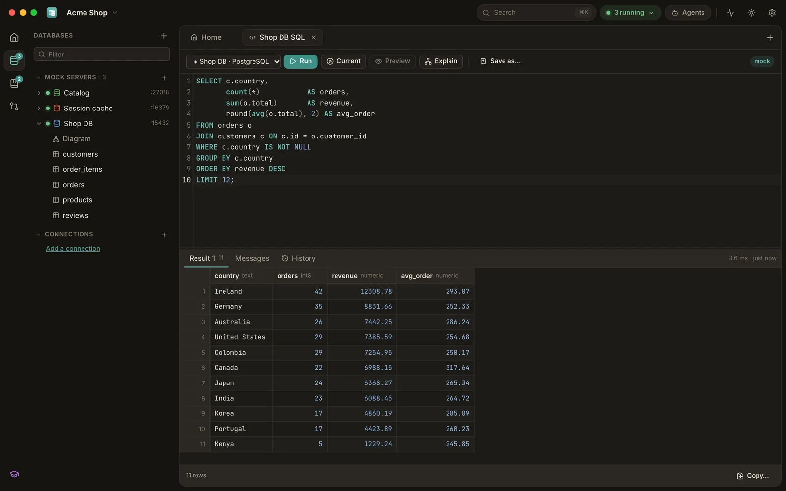
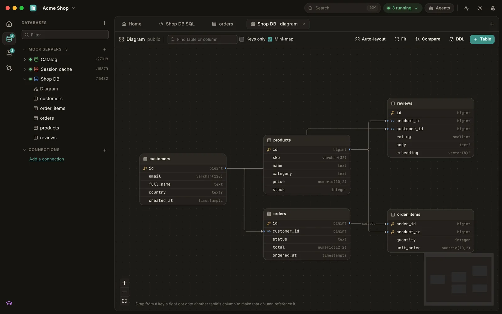
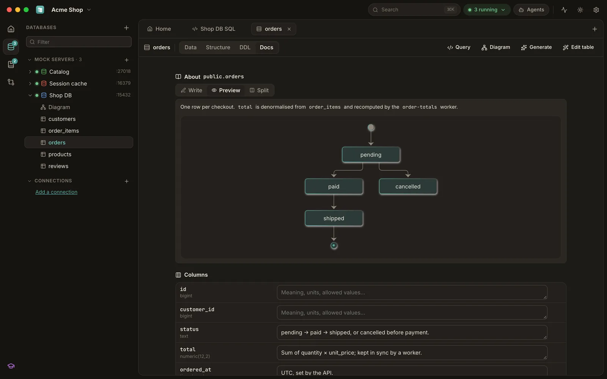
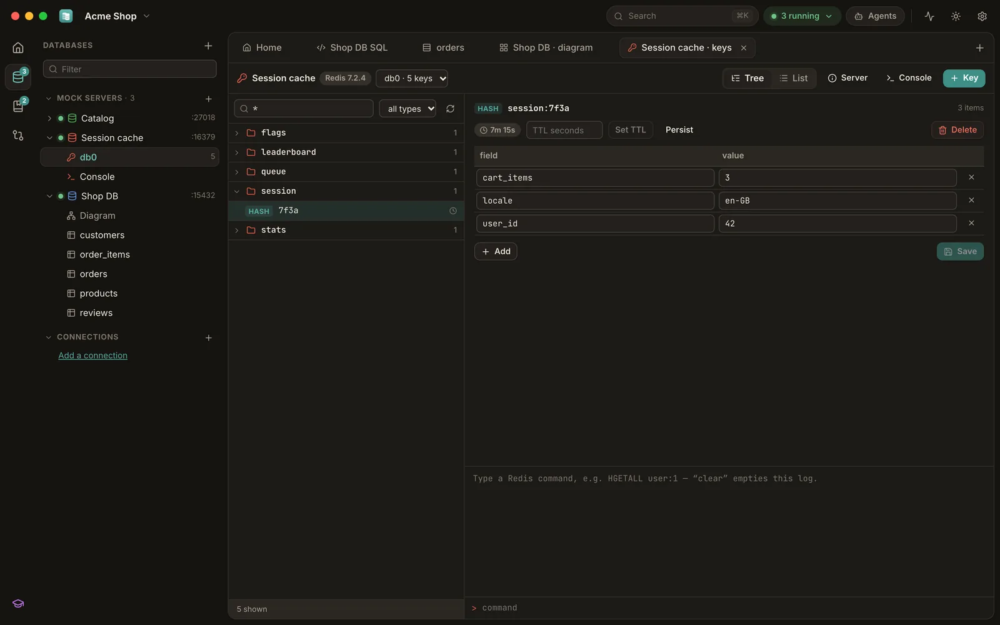
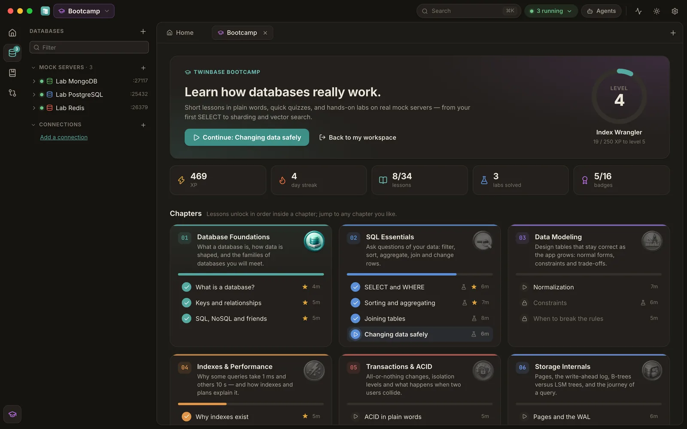
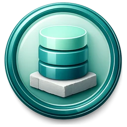
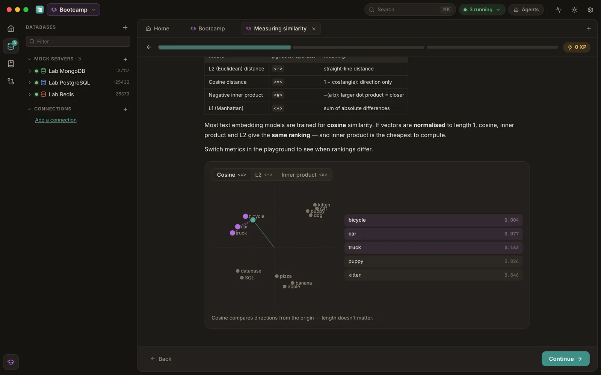
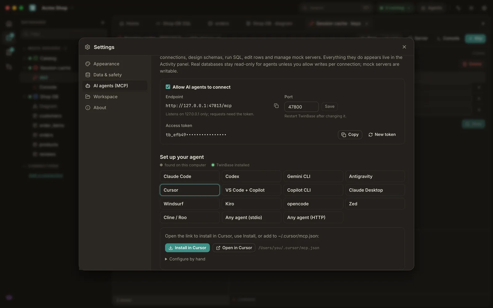

Change preview
Run an UPDATE on a local twin first: every changed, added and removed row — cascades included. The commit is refused if the row count no longer matches.
A fast database client and real wire-protocol mock servers in one desktop app. Give your code a PostgreSQL, MySQL, SQL Server, Redis, MongoDB, DynamoDB or Firestore server in one click — no Docker. Preview every change before it runs, document everything, let your AI agent help, and learn how databases really work in the built-in Bootcamp.

TwinBase mocks speak the actual wire protocols, so your app, ORM, migration tool or psql connects with its normal driver — only the host and port change. A few megabytes of memory, started in milliseconds.
vector, halfvec, sparsevec, <=>, <->, HNSW DDL — embedding code runs unchanged# the same mocks, headless, in CI
twinbase mock postgres --port 5433 --seed db/schema.sql
psql "postgres://dev@127.0.0.1:5433/app"

Browse and edit fourteen kinds of databases with the same grid, editors and diagrams.
Run an UPDATE on a local twin first: every changed, added and removed row — cascades included. The commit is refused if the row count no longer matches.
EXPLAIN, SHOWPLAN, Spanner and BigQuery plans drawn as a tree with the expensive steps highlighted and index hints.
Snapshots, diffs and generated up/down migration scripts, plus DDL conversion between dialects.
Markdown with Mermaid diagrams on the workspace, every connection, mock, table and column — plain files you commit with your code.
Numbered databases, a namespace tree, typed editors, streams, JSON, server info and a script console.
No account, no cloud, no telemetry. Passwords live in your OS keychain; SSH tunnels and TLS built in.



Ten chapters, from your first SELECT to indexes, transactions, storage internals, Redis caching, sharding, CAP and vector search. Short lessons in plain words, interactive illustrations, playful quizzes and hands-on labs on real mock servers.


TwinBase is an MCP server. Claude Code, Codex, Gemini CLI, Antigravity, Cursor, VS Code, Windsurf and friends can design schemas, run SQL, edit rows, write docs, manage mocks and inject faults — every action shows up live in the Activity panel.
Real databases stay read-only for agents unless you allow writes per connection, and agents can never raise their own access.
# one line, or one click in Settings → AI agents
claude mcp add --transport http --scope user twinbase \
http://127.0.0.1:47800/mcp --header "Authorization: Bearer <token>"
codex mcp add twinbase -- twinbase mcp
twinbase agent install cursor

Installers for every platform, with checksums and build provenance on each release.
Builds aren't code-signed yet: on Windows choose More info → Run anyway; on macOS open System Settings → Privacy & Security → Open Anyway.